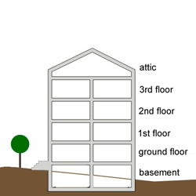

A. Hello. I'm your neighbor. My name is ___________.
B. Hi. I'm __________. Nice to meet you.
A. Nice meeting you, too. Where are you from?
B. England. And you?
A. America.
| Which is your apartment? | 6B | 3C | MP3-A | MP3-B |
| Where do you work? | In a bank. | In a sport shop. | MP3-A | MP3-B |
| What floor do you live on? | The 5th | The 6th | MP3-A | MP3-B |
| Where are you from? | Ulaanbaatar | Chicago | MP3-A | MP3-B |
| Who is your teacher? | Teacher Jim | Mrs. Tsetsgee | MP3-A | MP3-B |
| I'm = I am |
| Hi (family, friends, neighbors) = Hello (teachers, boss, important, unknown) |
| too = repeat the same answer |
Examples:
| A. How old are you? B. 23. And you? A. I'm 23, too. |
B. Where do you live? A. Galuut. And you? B. I live in Galutt, too. |
A. What is your favorite color? B. Green. And you? A. My favorite is green, too. |
This means you want to say the same thing the other person said.
Examples:
| A. I'm hot. B. Me, too. |
B. I'm going to study. A. Me, too. |
A. You have a good evening. B. You, too. |
| And you? = repeat the question |
Examples:
| A. How old are you? B. 59. And you? A. I'm 40. |
B. Where do you live? A. Galuut. And you? B. Ulaanbaatar. |
A. What is your favorite color? B. Blue. And you? A. Red. |
| Nice to meet you. = Nice meeting you. |
This is said only the first time you meet someone.
| What's (used mostly for speaking) = What is (more formal and put into text) |
neighbor (noun): a person who lives close to someone else.
apartment (noun): a room or set of rooms in a building used as living space.
floor (noun): a level of a building.
Examples: chef, machine, mustache, parachute, Chicago
| Which + noun (things or people): |
| Use which without a noun for things, not people: |
| Use who for people (without a noun): |
| Use which when thinking about a small number of possibilities ( ~2, 3 or 4): |
| What is more general: |
Lesson 1-1 Hello. I'm your neighbor. - PDF download
Complete lesson + Worksheet
Lesson 1-1 Hello. I'm your neighbor. - MP3 download
All the audio MP3s in a ZIP file